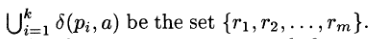
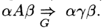
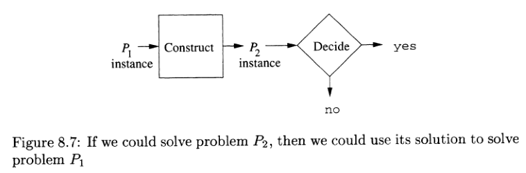
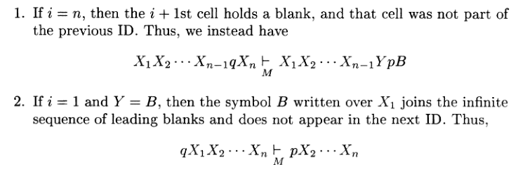

Chapter 1:Automata:The methods and the Madness
1.1 Why study Automata Theory

It’s conventional to designate accepting states by a double circle(haven’t show in pic above)
decidable:problems that can be solved by computer
tractable(难解)
1.2 Introduction to Formal Pr
oof(形式证明)
Formal Proof:
Statements:
①If-Then:
A->B
②If-And-Only-If:
A<->B
1.3 Additional Form of Proof(其他形式的证明方法)
略
1.4 Inductive Proofs(归纳证明)
略
1.5 The Central Concepts of Automata Theory(自动机的中心概念)
The most important concepts in automata:
Alphabets、Strings、language
1.5.1 Alphabets
Which is a finite and not empty set of symbols
Usually represented by $\sum$
1.5.2 Strings
A finite sequence of symbols chosen from some alphabets
$\sum^k$ is the set of strings of length k
$\sum^*$=$\sum^+ \cup\{\epsilon\} $
$\sum^+$=$\sum^1 \cup \sum^2 \cup…$
1.5.3 Langugaes
Definition:
A set of strings all of which are chosen from some $\sum^*$
2.3.3 The Extended Transition Function
每个状态再输入一个a后所得到的状态的集合
2.3.4 The Language of an NFA
2.3.5 Equivalence of Deterministic Finite Automata and Nondeterministic Finite Automata(DFA与NFA的转换)
NFA can change to DFA
worst situation:
DFA:$2^n states$ NFA:$n states$
to
And
L(N)=L(D)
$Q_D$ is the subset of power set(幂集) of $Q_N$
</center>
如图。
3个状态，于是8行(对应最多8个状态).输入符号相同（相应空中填对应NFA输入该符号后得到的状态）
包含q2的也就是接受节点
定理1:任何语言L能被一些DFA接受，那么必然也能被一些NFA接受
2.3.6 A Bad Case for the Subset Constuction
In some example,DFA has $2^n$ states
2.4 An Application:Text Search
2.4.1 Finding Strings in Text(查找字符串)
Inverted-Index
2.4.2 Nondeterministic Finite Automata for Text Search
2.4.3 A DFA Recognize a Set of Keyword
Convert NFA in 2.4.2 to DFA
2.5 Finite Automata With Epsilon-Transitions
A new type of Finite Automata,which allow a transition on $\epsilon$,$\epsilon-NFA’s$
$\delta(q,a),a\in\sum\cup\epsilon$
2.5.3 Epsilon-Closures($\epsilon$-闭包)
2.5.4 Extended Transitions and Languages for $\epsilon$-NFA’s
w=xa
(前面的x字符串最终能到达的状态集合)
(w字符串最终能到达的状态集合)
(对状态全集求闭包)
2.5.5 Eliminating $\epsilon$-Transitions(消除Epsilon DFA)
$q_D=ECLOSE(q_0)$
step1:先找起始状态集合。
step2:遍历各输入。如果碰到有Epsilon的，加上自动转换的节点
Chapter 3 Regular Expressions and Languages(正则表达式和语言)
is closely related to NFA
3.1 Regular Expressions
3.1.1 The Operators of Regular Expressions
1.union(并集)of two languages L and M:$L\cup M$
2.concatenation(链接): L.M or LM:
3.closure(闭包 or star\Kleene closure):$L^$:
$L^$is infinite union
同离散数学$L^*=L^0+L^1+L^2+…$
$|L^n|=|L|^n$
3.1.2 Building Regular Languages
E is a Regular expression
L(E) is the language that E describe.
3.1.3 Precedence of Regular-Expression Operators(操作符优先级)
1.星号*
2.链接符号或.
3.+
3.2 Finite Automata and Regular Expressions
1.Every language defined by NFA is also defined by a regular expression
2.Every regular expression can defined a automata
3.2.1 From DFA’s to Regular Expression(DFA转RE)
If L=L(A),then there has L=L(R)
算法思想实际上是求i->j所以可能路径
step1:列出0阶:$R_{ij}^{(0)}$
step2:根据公式列出1阶
算法思想实际上是求i->j所以可能路径，所以本例里只需要保留$R_{12}^{(2)}$
3.2.2 Converting DFA’s to RE by Eliminating States(消除法DFA转RE)
删除s后
一直删。直到转换成2状态DFA
这种情况两种都讨论
3.2.3 Converting Regular Expressions to Automata
基于3种结构，分部构造$\epsilon-NFA$
例子:(0+1)1(0+1)
step1:处理(0+1)
step2:加上星号
*step3:加上顺序结构
3.3 Applications of Regular Expression
RE的一些应用。仅作了解。这里略
3.4 Algebraic Laws for Regular Expression
也就交运算的交换律，链接运算的结合律。没什么可说的
还有同一律和吸收律
分配率（链接对交分配）
等幂律L+L=L
重要性质:
验证运算规则：
证E=F
把E=F用具体正则表达式C、D表示。测试L(C)=L(D)
比如证明
$L^=L^L^$
证明L(a)=L(aa)
Chapter 4:Propweties of Regular Languages
4.1 Proving Languages Not to Be Regular(证明一个语言不是正则的)
4.1.1 The Pumping Lemma for Regular Languages(泵引理)
若 L 是正则语言，则存在一常数 n > 0 (为DFA的状态数)，对于语言 L 中每个满足|w| ≥ n的字符串w，存在一组x,y,z使得，w=xyz且：
1.|xy| ≤ n ；
2.|y| ≥ 1；
3.对所有的 k ≥ 0 ，字串 属于 L 。(有k个重复)
4.2 Closure Properties of RE(闭包属性)
正则语言进行一些运算后，还是正则语言
1.union:$L\cup M$
2.intersection:$L\cap M$
3.complement(补):$\bar{L}=\sum^*-L$
同时，遵循德摩根定律
4.Reversal(转置)
5.Homomorphisms(同构)
比如01回文字符串:
A:
$P->\epsilon\\P->0\\P->1\\P->0P0\\P->1P1$
V={P}
S=P
T={0,1}
如一个变量运算的语言:
I为变量名,E为最终需要的语言
5.1.3 Derivations Using a Grammar

也就是可以把整体化成具体运算。类似f=a+b c+f=c+a+b
1.自底向上
2.自顶向下
5.1.4 Leftmost and Rightmost Derivations
就是一个是从左向右分解，一个从右向左分解。符号分别为
5.1.5 The Language of a Grammar
所有由终止符产生的字符串集合且w能映射到S(开始符号)或者能由S分解成w
5.1.6 Sentential Forms
left-sentential form:
比如aE是left-sentential因为
$E(E+E)$是right-sentential
5.2 Parse Tree
5.2.1 Constructing Parse Tree
1.每个内部节点都是V中的成员
2.叶子节点或者包含变量，或者包含终止符，或是是epsilon.而且必须是父节点的唯一后继
E=I+E和0110
5.2.2 The Yield of a Parse Tree
从左到右遍历叶节点能够获得一个字符串，称为the yield of a parse tree
5.2.3 Inference,Derivations,and Parse Trees
5.3 Applications of Context-Free Grammars
5.3.1 Parsers
5.4 Ambiguity in Grammars and Languages
5.4.1 Ambiguous Grammars
如
对于E+E*E可展开成
或
于是会产生歧义
5.4.2 Removing Ambiguity From Grammars
factor:运算顺序不能被任何运算符打乱的
term:不能被+打乱的:比如ab. 前或者后使用+和，顺序不变。。 c+(ab),(a*b)+c
5.4.3 Leftmost Derivations as a Way to Express Ambiguity
定理：一个字符串w是模糊的,当且仅当，存在不同的leftmost derivations
5.4.4 Inherent Ambiguity
一个语言L被称为Inherently Ambiguious当他所有的语法都是ambiguious时
chapter 6 Pushdown Automata（PDA:下推自动机）
A Automata that can define context-free automata
It’s a extension of $\epsilon-$NFA
It’s essentially an $\epsilon-$NFA+a stack
2版本：
1.accepts by entering accepts state
2.accepts by emptying the stack
6.1 Definition of the Pushdown Automata
6.1.1 Informal Introduction
PDA can remember an infinite amount of information
PDA recognize all and only context-free languages
6.1.2 The Formal Definition of Pushdown Automata
如回文串的
6.1.3 A Graphical Notation for PDA’s
6.1.4 Instantaneous Descriptions of a PDA
转换过程如图
定理1
如果$\epsilon(q,a,X)$返回$(p,\alpha)$
则$(q,aw,X\beta)$与$(p,w,\alpha \beta)$相同
记
定理2
如果
那么
(相当于把输入了一半。然后把q替换成得到的新状态，总字符串消去已经输入的alpha,还有w需要输入。堆栈的话也把X替换成得到的新的符号)
上面两个定理转换为人话就是:
如果对两个不同的状态，输入，堆栈内容 迁移函数得到结果相同。
那输入后面同时加上相同字符串$w$,堆栈替换内容同时在后面加相同符号，也相同
定理3
如果
则
也就是对两个不同状态，两个末尾字符串相同的不同字符串，不同堆栈状态迁移等效的话。
那么字符串去掉后面相同部分后也是等效的
(很好理解,相当于自动机从两个不同状态迁移一个中间状态下，再输入w后的迁移是等效的。那么显然不输入w时，仅从起始状态到达这个中间状态也是等效的)
6.2 The Languages of a PDA
判断一个字符串可以被结束
1.能够到达接受状态
或者
2.能够清空栈
6.2.1 Acceptance by Final State
如
6.2.2 Acceptance by Empty Stack
定义
也就是消费完字符串后能够清空栈
N(P)表示所有能让自动机P清空栈的字符串w的集合
6.2.3 From Empty Stack to Final State
转换空栈类型PDA到最终状态型PDA
如 检测if-else不匹配的自动机。
检测if-else不匹配的自动机。
$注P_N$只有6元组，没有最终状态
转换方式
开始时使用自动转换，把栈顶替换成ZX
然后中间是空栈类型PDA状态机模块。如果能够接受一个字符串的话相当于,中间这个模块能够把Z弹出(因为如6.5,这个空栈类型状态机就是初始是Z，然后栈空后结束)。于是经过中间模块如果能弹出Z。得到X。那么就向结束状态迁移
如果栈顶是X_0的话就开始pop
6.2.4 From Final State to Empty Stack
原理图
也是分成3个模块。
左边那个模块是自动转换，自动让栈顶变成ZX（同6.2.3)
中间那个是终态类型PDA状态机模块，如果能到达终态的话，就出栈，并迁移到p(模块3)一直弹栈就行
6.3 Equivalence of PDA’s and CFG’s (下推自动机和上下文无关文法的等价)
6.3.1 From Grammars to Pushdown Automata
如
转换成PDA
首先写出输入标志集合
弄出迁移函数
对于每项都构造一个空串到自身的转换函数。栈顶替换成相应的右侧元素
然后操作原子值。各格式$\delta(q,x,x)={(q,\delta)}$也就是到自身的弹栈
6.3.2 From PDA’s to Grammars
如转换这个
(如果r\p也是状态的话。。一共n^2个可能)
用简单的标识代换
于是
方法:
$Z$替换成$[qZq_i]$.q_i为任意一个状态
6.4 Deterministic Pushdown Automata(确定的下推自动机:DPDA)
如果迁移函数返回的pair只有一组，那么就是确定的
6.4.2 RL and DPDA
如果L是正则语言，那么L=L(P)是某些DPDA
设∑为有穷字母表，∑为其Kleene闭包（见作用代数）。那么称字符串集L∈∑为正规语言，当且仅当满足下列条件之一：
L可以被一个确定有穷自动机识别；
L可以被一个非确定有穷自动机识别；
L可以用正则表达式表达；
L可以用正则文法生成；
L可以由前缀文法生成；
6.4.4 DPDA’s and Ambiguous Grammars
如果L=N(P)是某些DPDA
那么L拥有非模糊的文法
推论
如果L=N(P)是某些DPDA
那么L拥有非模糊的上下文无关文法(CFG)
Chapter 7 Properties of CFL(Context-Free Languages)
first task:simplify CFG(context-free grammars)
7.1 Normal Forms for CFG
Chomsky Normal Form
A->BC
A->a
step1:eliminate useless symbols
step2:eliminate $\epsilon-productions$
step3:eliminate unit productions
7.1.1 Eliminating Useless Symbols
一个标志X
是
generating的如果能推导一个终止字符串w
reachable的如果存在$\alpha$、$\beta$。S能推导出$\alpha X\beta$
例子:
7.1.2 Computing the Generating and Reachable Symbols
如何判断是不是generating的:
1.显然T中的元素都是generating的
2.A->$\alpha$.如果$alpha$中所有标志都是generating的，那么A也是
寻找reachable集合:从S出发遍历每个符号
7.1.3 Eliminating E-Productions
7.1.4 Eliminating Unit Productions
A unit production is production likes $A\rightarrow B$,both A and B are variable
消除unit production如
展开算法
从二元组（E,E）开始
其实就是逆操作。吧A->B形式的全部展开
得到
7.1.5 Chomsky Normal Form(CNF)
A->BC
A->a
的格式
step1:找所有终止符,如果没有A->a这样的形式的话，单独拿一个变量名来生成他。比如
上面例子的终止符，需要全部拿新变量命名
step2:变量名代换
step3:代换。变成AB形式
Unit Pair(单位对)
(A,A)是单位对（因为A是A的零步推导）
A->B
(A,B)也是单位对
</center>
7.2 The Pumping Lemma for CFL(Context-Free Language)
正则语言的泵引理:
若 L 是正规语言，则存在一常数 n > 0 使得语言 L 中每个字串 w 的 |w| ≥ n，而当 w = xyz 时：
|xy| ≤ n ，
|y| ≥ 1 ，且
对所有的 k ≥ 0 ，字串 xy^kz 属于 L 。n为对于DFA状态数
证明:一个足够长的如果w属于正则语言L。那么存在一个状态数为n的DFA来识别他.|w|>n 于是存在重复的状态.记为y^k.
本章说的是上下文无关语言(CFL)的泵引理
7.2.1 The Size of Parse Tree
推出一个pumping lemma的第一步是观测语法树的形状和大小
定理1:如果G是CNF(Chomsky-Normal-From),有一个语法分析树,最长路径为n.生成terminal字符串w那么有$|w|\le 2^{n-1}$
….这。。显然就是n叉树的性质吧…Chomsky最多度2(A->BC).所以这里按二叉树的性质来。路径最长为n.相当于n层。
7.2.2 Statement of the Pumping Lemma
类似正则语言的泵引理。不过分成5部分。然后Pump 2和4部分
定理1:L是上下文无关语言（CFL），存在一个常数n（任意字符串z长度大于等于n）,有z=uvwxy
1.$|vwx|\le n$ (干掉开头 结尾)
2.$vx\ne \phi$ (2、4不都为空.pump掉的字符串至少一个不为空)
3.对于所有$i\ge 0$,$uv^iwx^iy\in L$.也就是pump掉的字符串重复几次都没关系，都还是同一种语言
</center>
步骤:
1.选择一个n(并不确定，考虑所有可能的n)
2.选择z.|z|>n
3.把z分解成uvwxy，只有|vwy|小于n.vx至少一个不为空即可
4.如果能够选择i.使v x重复i次还是不属于L。那么就证了不是上下文无关语言
7.2.3 Applications of the Pumping Lemma for CFL’s
略
7.3 Closure Properties of CFL
7.3.1 Substitutions
比如定义$s(0)=\{a^nb^n|n\ge 1\}$
$s(1)={aa,bb}$
那么$s(01)=s(0)s(1)={a^nb^naa 或 a^nb^{n+2}}$
定理:L是CFL，s是一个$\sum$上的substitution,那么s(L)也是CFL
7.3.2 Applications of the Substitution Theorem
7.3.3 Reversal(转置)
上下文无关语言L,反转后$L^R$也是CFL
7.3.4 Intersection With a Regular Language(和正则语言的交)
上下文无关语言（CFL）L与正则语言（RE） R的交仍是CFL(…因为RE也是CFL)
7.3.5 Inverse Homomorphism
如果L是CFL，h是一个homomorphism,那么$h^{-1}(L)$也是CFL
7.4 Decision Properties of CLF’s
7.4.1 Complexity of Converting Among CFG’s and PDA’s(上下文无关文法和下推自动机转换的复杂度)
O(n^3)
7.4.2 Running Time of Conversion to Chomsky Normal Form
1.发现reachable\generating 标志需要O(n)
2.构造pair和消除unit production需要O(n^2)
3.代替标志需要O（n）
于是需要O(n^2)
7.4.3 Testing Emptiness of CFL’s
L is empty if and only if S is not generating
**7.4.4 Testing Membership in a CFL
O(n^3)
1.通过w构造一个表
表项$X_{ij}$是由A=>$a_ia_{i+1}…a_j$的变元A的集合
关心的是S是否属于$X_{1n}$,是的话就说明w属于L
构造:从下到上。每个项需要O(n)
计算方法：
对于$X_{ij}$,已经知道所有比$a_i….a_j$短的串和他们的真前缀、后缀
1.肯定是由A->BC形式推导出来的，B推导$a_i…a_k$,C推导$a_{k+1}…a_j$
Chapter 8 Introdution to Tuling Machines
8.1 Problems That Computer Cannot Solve
8.1.2 The Hypothetical “Hello,World”
P:program
I:Input
H是一个程序判断程序P和输入I是否能输出hello world
如果会怎样?
H_2作为自己的输入。如果输出yes的话，表明能输出hello world,但是输出了yes.如果输出了hello,world的话，又应该输出yes..
8.1.3 Reducing One Problem to Another
A problem that cannot be solved by computer is called undecidable.

难题转换
从P1构造P2，再解决P2
8.2 The Turing Machine
Essentially a finite automaton that has a single tape of infinite length on which it may read and write data
(本质是一个有限自动机，有一条无限长的带子，可以在上面读写数据)
8.2.1 The Quest(探索) to Decide All Mathematical Questions
8.2.2 Notation for the Turing Machine
The machine consists of a finite control, which can be in any of a finite set of states
initially hold a special symbol called the blank. The blank is a tape symbol, but not an input symbol
Q:有限控制的状态集合
$\sum$:输入标志集合
$\Gamma$:纸带上标志的完全集合，一般$\sum$是其子集
$\delta$转换函数,输入(q,X),q是当前状态，X是tape标志
返回(p,Y,D) p是新状态，Y是cell字符(在gamma里)，表示在当前扫描单元里写入的数据,D是方向（左或右）
q0:起始状态(finite control的)
B:blank标志。属于gamma不属于sum
F:接受状态
8.2.3 Instantaneous Descriptions for Turing Machines
3种不同情况

原位置右边被替换成Y,然后移动
(原位置右边，相当于当前Finite control指向)
8.2.4 Transition Diagrams for Turing Machines
左边是当前值/新值 方向
8.2.5 The Language of a Turing Machine
L(M)
Turing machine is often called the recursively enumerable Languages or RE languages
8.2.6 Turing Machines and Halting(图灵机和停机)
图灵机无路可走的情况,函数对于某个输入没有定义。无法转移
一般假设图灵机在接受状态下总是停机的
无论是否接受，都能停机的图灵机成为可递归的(recursive)
8.3 Programming Techniques for Turing Machines
8.3.1 Storage in the State(存储于状态)
(下面是多道，上面是存储于状态)
可以在finite control里面加上有限的数据储存
于是state变成[q,A,B,C],不再只是q (变成了多元组)
比如定义
state $Q$变成。q状态集合和gamma的乘积
8.3.2 Multiple Tracks(多道)
相当于多条纸带。。和8.13的图差不多
input 标志变成[B,0] [B,1]之类的
如8.13,扫描头指向的是[X,Y,Z]3元组，而不止是X
8.3.3 Subroutines(子程序)
A Turing-machine subroutine is a set of states that perform some useful process
包含初始状态和返回状态
如一个乘法程序。输入$0^n10^m1$在末尾输出$0^{mn}$
算法是每次n-1,在末尾输出一个m个0
copy是实现这有一步的子程序（把$0^{m-k}1q_10^n10^{(k-1)n}$变成$0^{m-k}1q_10^n10^{kn}$)
q1是开始,选择一个0用X标记
q2是不停右移，找到一个B(也就是移到末尾),换成0
q3是一直左移，直到找到X
q4是恢复X为0
q5结束
完整图
8.4 Extension to the Basic Turing Machine
8.4.1 Multitape Turing Machines(多带图灵机)
8.4.2 Equivalence of One-Tape and Multitape TM’s
Because the language that Single-tape Turing Machines can acccept is recursive enumerable language,so the language that Multitape Turing Machines can accept are also recursive enumerable
8.4.3 Running Time and the Many-Tapes-to-One Construction
8.4.4 Nondeterministic Turing Machines(NTM,非确定型图灵机)
也就是迁移函数返回多个三元组
定理
若$M_N$是非确定型图灵机，那么存在确定型图灵机$M_D,L(M_N)=L(M_D)$
8.5 Restricted Turing Machines(受限图灵机)
8.5.1 Turing Machines With Semi-infinite Tapes (半无穷带)
8.5.2 Multistack Machines(多栈图灵机)
双堆栈PDA能接受图灵机能接受的语言
8.5.3 Counter Machines(计数器机器)
其是受限的多堆栈机器。
栈底是Z_0
其他符号都是X
单计数器（实质是PDA）所以能接受CFL
多计数器实质是多栈图灵机，可以recursive enumerable语言
8.5.4 The Power of Counter Machines
8.6 Turing Machines and Computer
8.6.1 Simulating a Turing Machines by Computer
8.6.2 Simulating a Computer by a Turing Machines
Chapter 9 Undecidability
9.1 A Language That Is Not Recursively Enumerable
9.1.1 Enumerating the Binary Strings(枚举二进制串)
把字符串用二进制数代替
空串:1st
0:2 nd
1:3 rd
00: 4th
01: 5th
……
其实就是$1\omega$代表的整数$i$
9.1.2 Codes for Turing Machines
图灵机编码
例子
把更改转换函数,$R$用$D_2$代替,$L$用$D_1$代替。0用$X_1$,1用$X_2$,B的话用X3
然后每行改成写成$0^n10^i10^j10^k10^l$分布代表5个下标
比如第一行
转换后
$\delta(q_1,1)=(q_3,0,R) 变为[0][100][1000][10][100]$
$\delta(q_3,0)=(q_1,1,R)变为[000][10][10][100][100]$
$\delta(q_3,1)=(q_2,0,R)变为[000][100][100][10][100]$
$\delta(q_3,B)=(q_3,1,L)变为[000][1000][1000][100][10]$
然后把4行连起来，中间用11连接
$M=[0][100][1000][10][100]11[000][10][10][100][100]11[000][100][100][10][100]11[000][1000][1000][100][10]$
去掉中括号
9.1.3 The Diagonalization Language(对角化语言)
M可以被编码成$\omega_i$
从$\omega_i$恢复成图灵机的话,如果不是合法编码，那只有一个状态，没有任何转换
定义:
The Diagonalization Language $L_d$ is the set that include all string s not in $L(M_i)$.也就是所有不能被图灵机识别的字符串
对角线说明M_i是否接受w_i
this table show that if $M_i$ can accept $\omega_j$
i th row can be seen as the characteristic vector(特征向量) of $M_i$
对应行的特征向量取反，就是$L_d$了
9.1.4 Proof That $L_d$ Is Not Recursively Enumerable
略
9.2 An Undecidable Problem That Is RE
现在已经得到了$L_d$(不能被图灵机接受)
下一个目标提炼RE语言的结构
RE语言可以分成两类
一类是不管怎样都能自动停机的
一类是不当的输入下可能一直运行的
9.2.1 Recursive Languages
只要L=L(M)对某些图灵机成立而且对于一个输入w，如果w是在L中的话最终会停机且在accept态,w不在L中最终也能停机，即使不在终态。那么就是recursive的
halt(停机)
可以看到R是RE的子集
9.2.2 Complements of Recursive and RE languages
如果L是recursive语言，$\bar L$也是
如果L和L的补都是RE的，那么L是R的
9.2.3 The Universal Language
$L_u$是一个集合，包含所有能表示成图灵机M的字符串M,且能被接受的字符串。。(M,w)
9.2.4 Undecidability of the Universal Language
$L_u$是RE但是不是R
R=可判断
9.3 Undecidable Problems About Turing Machines
9.3.1 Reduction
9.3.2 Turing Machines That Accept the Empty Language
$L_e$是非RE的
$L_{ne}$是RE非R的
是RE：
不是R
9.4 Post’s Correspondence Problem
该问题是非R的（不可判定的)
Chapter 10 Intractable Problems
10.1 P和NP
P:确定多项式
NP:非确定多项式
P是NP的子集
P是能在多项式时间内解决的问题
NP是能在多项式时间内验证一个正确解的问题
10.1.1 Problems Solvable in Polynomial Time
T(n)
10.1.2 An Example : Kruskal’s Algorithm
10.1.3 Nondeterministic Polynomial Time
10.1.4 NP例子
travel salesman problem(旅行商问题)
找哈密尔顿回路(每点只遍历一次)
10.1.5 Polynomial-Time Reductions
10.1.6 NP-Complete
L是一个NP问题
所有NP问题，都可以在多项式时间能转化为他
10.2 An NP-C Problem
Boolean Satisfiability Problem:
Keyword
DFA(确定的有限自动机)
NFA(非确定有限自动机)
Regular Language(正则语言)
Regular Grammar(正则文法)
Regular Expression(正则表达式)
PDA(下推自动机)
Turing Machines(图灵机)
Pumping Lemma(泵引理)
Context-Free Languge(上下文无关语言)
Context-Free Grammar(上下文无关文法)
PDA(下推自动机)
DPDA(确定的下推自动机)
NPDA(非确定的下推自动机)
Transition Diagrams(转移图)
$\epsilon$-Transitions(epsilon迁移)
Parse Tress(语法分析树)
Leftmost and Rightmost Derivations(左、右推导)
Ambiguous Grammars(模糊文法)
Parsers(语法分析器)
Instantaneous Descriptions(瞬时描述 ID) and $\vdash$
Chomsky Normal Form
CYK algorithm
Recursive Enumerable
Diagonalization Language
Recursive Language
Universal Language
Post’s Correspondence Problem
P,NP,NPC,NP Hard
Traveling Salesman Problem
Boolean Satisfiability Problem
3SAT
SAT Peoblem
Polynomial-Time Reductions